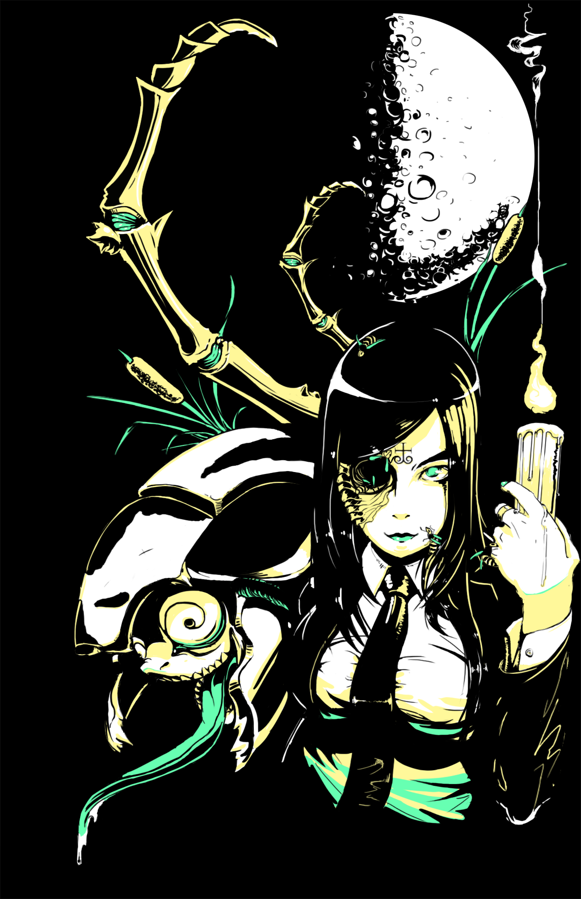

GOAL: Using a provided photo, redraw a new DVD cover for the Titanic in a comic style. TARGET ARTIST: Aaron Sacco PROGRAM: Adobe Illustrator TOOLS: Tapered Brush tool, Pen Tool

GOAL: Personal illustration exercise PROGRAM: Adobe Photoshop TOOLS: Brush Tool
GOAL: Retrace a provided pencil sketch into a scifi comic style while utilizing Metallic Coated Pantone inks TARGET ARTIST: Brian Yap PROGRAM: Adobe Illustrator TOOLS: Pen Tool